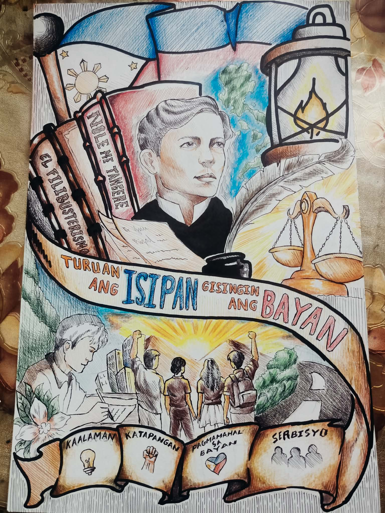
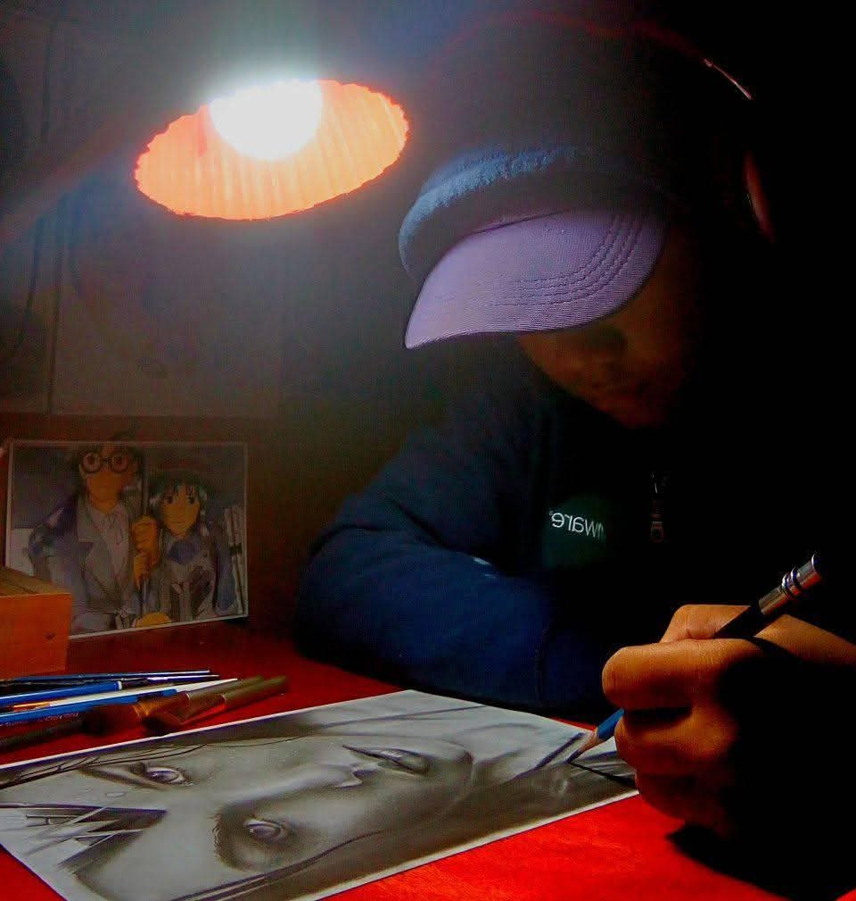

01 / CHARACTER PORTRAIT
Diana of Themyscira
A character portrait study focused on facial expression, strength, and Amazonian identity.
Skills: Portrait • Expression • DetailCharacter drawing, realistic illustration, key animation studies, and visual storytelling.

An aspiring illustrator and Genga artist focused on characters, emotion, and visual storytelling.
I am Mike Anthony B. Pacres, a Bachelor of Science in Information Technology student from Caraga State University. I am an artist who enjoys creating realistic portraits, character illustrations, and traditional drawings.
My artistic practice is built around observation, patience, attention to detail, and continuous improvement. I am particularly interested in animation and Genga, where drawings communicate character movement, emotion, and storytelling.
My goal is to develop my skills as an Illustrator and Genga Artist and eventually contribute to professional animation and visual storytelling projects.
Illustrator / Genga Artist
Aspiring Illustrator and Genga Artist with experience in traditional drawing, realistic portraits, character studies, and visual storytelling. Demonstrates patience, attention to detail, observation skills, and commitment to continuous artistic development. Interested in contributing to illustration and animation projects while developing professional skills in key animation and character art.
Caraga State University — Main Campus
Personal Art Practice
Personal Development Project
Patience • Discipline • Observation • Attention to Detail • Creativity • Willingness to Learn • Visual Communication
Five selected artifacts demonstrating skills relevant to an Illustrator and Genga Artist role.

A character portrait study focused on facial expression, strength, and Amazonian identity.
Skills: Portrait • Expression • Detail
A realistic drawing emphasizing proportions, values, facial structure, and observation.
Skills: Realism • Observation • Shading
A study exploring character appearance, personality, pose, and expression.
Skills: Character Design • Pose • Expression
A key-animation-inspired study focusing on body movement, silhouette, and readable character poses.
Skills: Gesture • Pose • Movement
A study of facial expressions designed to communicate different emotions clearly.
Skills: Facial Anatomy • Emotion • ActingI wanted to create a character portrait that could communicate strength and personality while maintaining realistic facial details.
My goal was to produce a detailed traditional artwork with accurate proportions, expression, and visual character.
I studied the reference, constructed the facial proportions, developed the features, and refined the values and details through repeated observation.
I completed a finished character portrait that demonstrated my ability to combine observation, patience, detail, and character expression.
I wanted to expand my traditional drawing skills toward animation and understand how artists communicate movement through key poses.
I needed to practice poses, gestures, expressions, and movement while keeping characters readable.
I created gesture and pose studies, focused on silhouettes and body proportions, and practiced expressive character drawings.
The studies helped me develop a stronger understanding of pose, expression, movement, and visual storytelling while giving me a foundation for further Genga practice.
Sensitive information such as certificate numbers, QR codes, signatures, and personal identification details should be redacted before uploading.
Add the official certificate title, issuing organization, and year.
Add the official certificate title, issuing organization, and year.
Add the badge name and issuing organization.
References should only be displayed with the person's permission.
Add a recommendation or short statement from a teacher, mentor, project leader, or other professional who has given permission to be listed as a reference.
This portfolio is designed to follow privacy principles under the Philippine Data Privacy Act of 2012 (RA 10173). It does not publicly display personal identification numbers, government IDs, home addresses, confidential academic records, passwords, private contact information, or other unnecessary sensitive data.
Certificates and documents should be reviewed and redacted before publication. References should only be included with the person's permission.
For illustration, character art, collaboration, or creative opportunities.
your.email@example.com